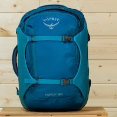

La mia storia
Seguendo le mie passioni: da sviluppatore ad Agile Coach, product manager e facilitatore.
-

05/2020 - oggi
Italia
Data la panedemia ho deciso di tornare in Italia dove faccio facilitazione e consulenza online. Trova dettagli sui miei servizi e come contattarmi.
-
07/2018 - 03/2020
Los Angeles
Transizione dalla track engineering ad un ruolo di coaching come Senior Product Manager per Pivotal Labs.
-
05/2018 - 07/2018
Sydney, Australia
Rotazione a Sydney con Pivotal Labs per aiutare un cliente con lo sviluppo di una applicazione mobile per la patente di guida del governo locale.
-
09/2016 - 05/2018
Los Angeles, California
Da Principal Engineer per Pivotal Labs ho aiutato e fatto hands on coaching in team di sviluppo Agile su diverse tematiche tra le quali abbiamo fatto load testing e capacity planning di 300.000 rpm su un progetto legato alle cryptocurrencies.
-
05/2016 - 09/2016
Chicago, Illinois
Rotazione a Chicago con Pivotal Labs per aiutare un team di sviluppo agile per una app e backend di una delle piu grandi assicurazioni sanitarie statunitensi.
-
07/2015 - 05/2016
Boulder, Colorado
Unito a Pivotal Labs come Principal Engineer. Ruolo attivo di sviluppo e di coaching Agile, stack Ruby, Java Spring, Swift e ReactNative.
-
01/2014 - 07/2015
New York City
Transferito da Sydney a New York City come senior software developer per una compagnia che migrava i loro portali da .NET a Ruby.
-

06/2013 - 01/2014
Viaggio sabbatico
Da Sydney, via Cina 3 mesi esplorando l'Europa e 3 mesi esplorando gli Stati Uniti d'America.
-
07/2007 - 06/2013
Sydney, Australia
Unito a News Corp come sviluppatore per 6 mesi, poi circa 3 anni in uno studio web che sviluppava soluzioni in Ruby on Rails ed infine circa 2 anni alla ABC (Australian Broadcasting Corporation) come tech lead.
-

01/2001 - 07/2007
Italia
Sviluppato software per realta locali, e assistente ad un Istituto Tecnico Informatico.
-
2000
Diploma Istituto Tecnico Informatico